Skip to content
Électroniques
Maison
Beauté
Santé
Cuisine
Outils
Sports
Jouets
Bébés
Mode
Extérieur
Animaux
Jeux Vidéos
Livres
Rechercher :
Électroniques
Maison
Beauté
Santé
Cuisine
Outils
Sports
Jouets
Bébés
Mode
Extérieur
Animaux
Jeux Vidéos
Livres
Rechercher :
Rechercher :
Accueil
>
Électroniques
Électroniques
Acer Spin 5 – Test et avis
Amd FX 6100 – Test et avis
Singer 3221 – Test et avis
Pioneer Avic F980BT – Test et avis
Samsung UE22H5000 – Test et avis
Picopix 3614 – Test et avis
Husqvarna 105 – Test et avis
HP Officejet 5740 – Test et avis
HP Officejet 6950 – Test et avis
Garmin Fenix 2 – Test et avis
Polaroid 300 – Test et avis
Rosieres RLF 99 – Test et avis
Dyson AM05 – Test et avis
Asus Zenfone 3 ZC520TL – Test et avis
JBL SB350 – Test et avis
Turtle Beach PX22 – Test et avis
Yotaphone 2 – Test et avis
Etrex 30X – Test et avis
Bose Soundtouch 30 – Test et avis
Pentax KS1 – Test et avis
Maxiscan MS509 – Test et avis
LG Leon – Test et avis
Whirlpool WIC3C26P – Test et avis
Canon SX620 – Test et avis
Bryton 530 – Test et avis
Vax 7151 – Test et avis
Nikon D3300 – Test et avis
Bosch Rotak 40 – Test et avis
Astro A50 – Test et avis
Zecircle 2 – Test et avis
Acer Iconia One 8 – Test et avis
Lumie 250 – Test et avis
Xperia C5 Ultra Dual – Test et avis
Meizu MX4 – Test et avis
Bosch KGV39VL31S – Test et avis
Dyson DC37C – Test et avis
Hotpoint WMD 942K – Test et avis
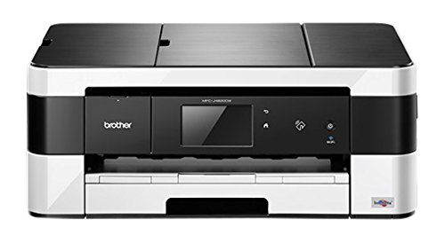
Brother MFC-J4620DW – Test et avis
Hp Pagewide Pro 477DW – Test et avis
Facom F400 – Test et avis
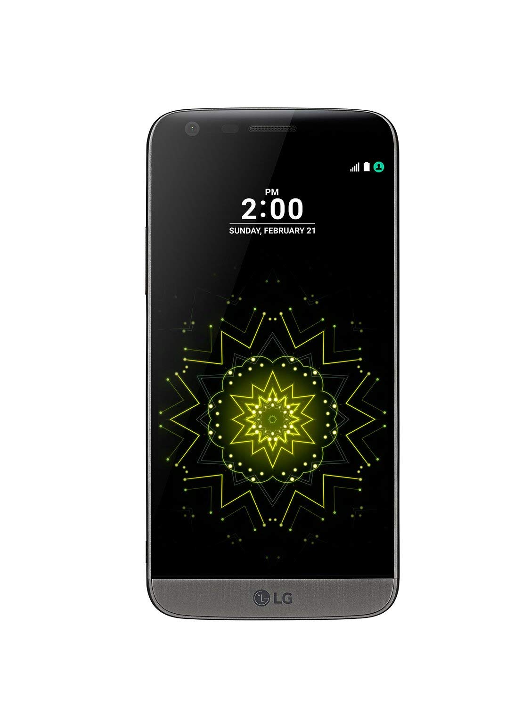
LG G5 SE – Test et avis
Bryton 310 – Test et avis
BenQ MS527 – Test et avis
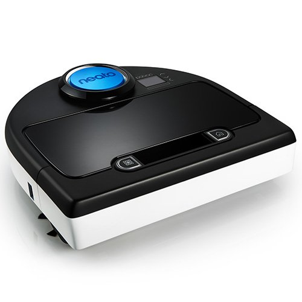
Neato Botvac D85 – Test et avis
Panasonic TV TX-49DX600 E – Test et avis
Marantz MCR611 – Test et avis
Sony HDR CX405 – Test et avis
Asus Memo Pad 10 – Test et avis
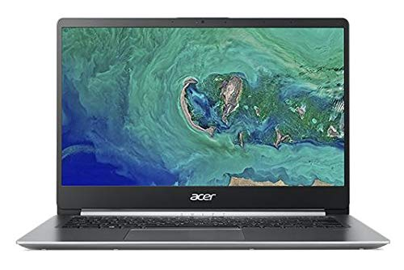
Acer Swift 1 – Test et avis
Bluboo S8 – Test et avis
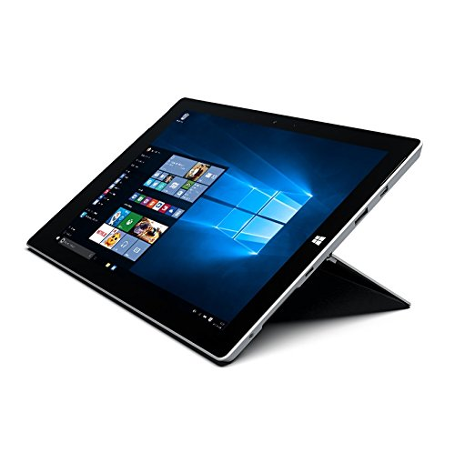
Microsoft Surface 3 – Test et avis
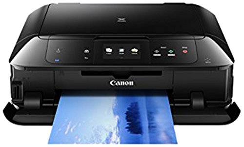
Canon Pixma MG7550 – Test et avis
Yamaha YSP 2500 – Test et avis
Canon 77D – Test et avis
Komplete Audio 6 – Test et avis
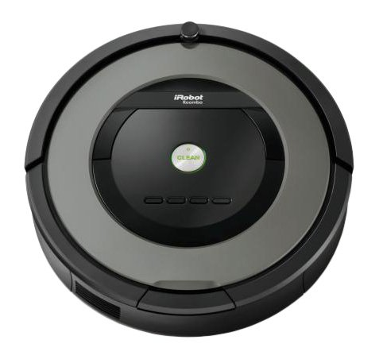
Roomba 866 – Test et avis
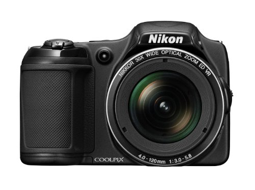
Nikon Coolpix L820 – Test et avis
Brother 2104D – Test et avis
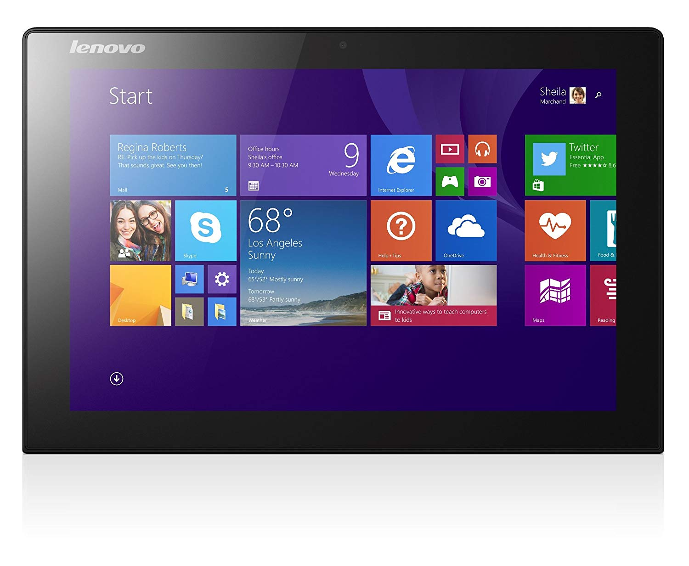
Lenovo Miix 3-1030 – Test et avis
LG LHB655 – Test et avis
HP Stream 11 – Test et avis
Somfy SGA 4100 – Test et avis
Sony HDR CX240 – Test et avis
Bird UM1 – Test et avis
Wagner Project Pro 117 – Test et avis
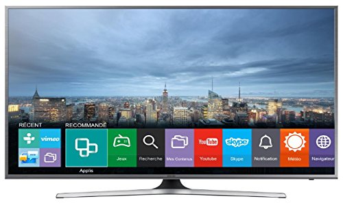
UE55JU6800 – Test et avis
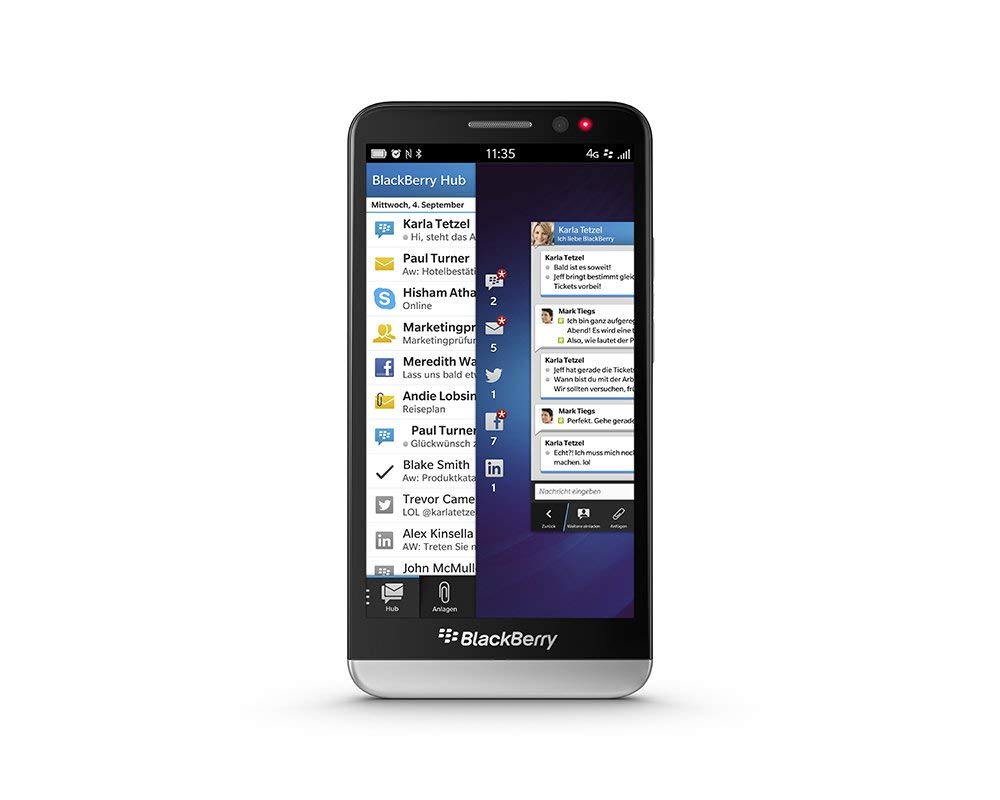
Blackberry Z30 – Test et avis
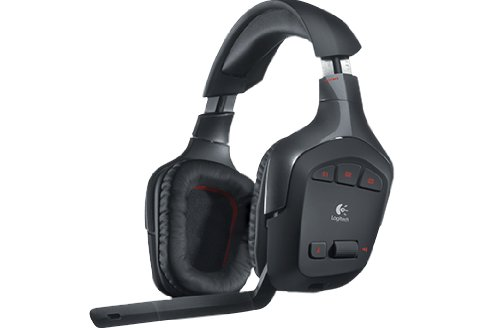
Logitech G930 – Test et avis
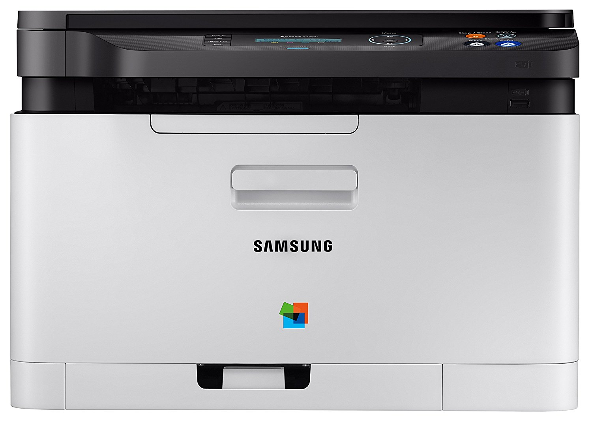
samsung SL-C480W – Test et avis
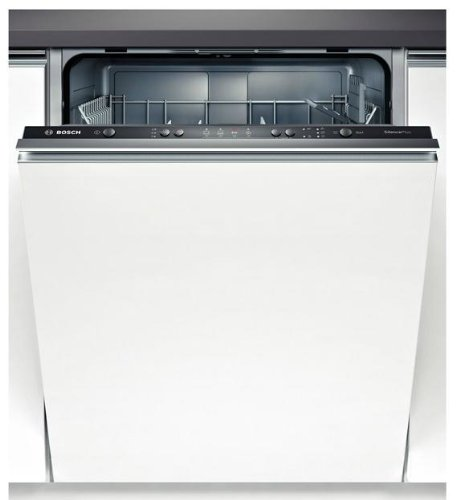
Bosch SMV41d00EU – Test et avis
Discovery V8 – Test et avis
Whirlpool BLF8001OX – Test et avis
Razer Kraken Pro V2 – Test et avis
Rowenta RO5927EA – Test et avis
Rega RP1 – Test et avis
Samsung B2710 – Test et avis
Singer 14SH644 – Test et avis
Somfy Exavia 500 – Test et avis
Comparatif des 10 meilleurs Smartphones 4.5 Pouces
Comparatif des 10 meilleures Cartes Mere 1151 de 2023
Comparatif des 10 meilleurs Kitchenaid
Comparatif des 10 meilleurs haut-parleurs voiture de 2023
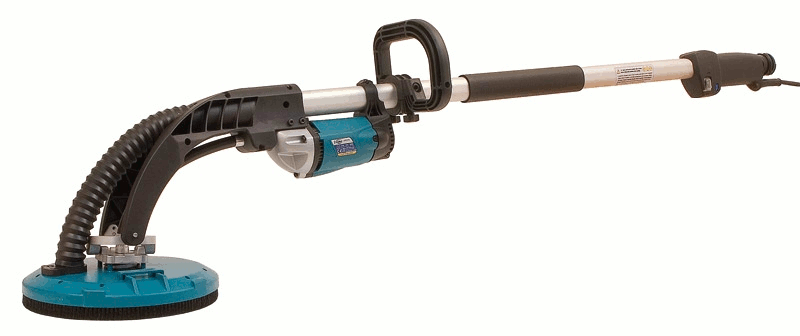
Comparatif des 10 meilleures Ponceuses Girafe de 2023
Comparatif des 10 meilleurs Cameras de Recul Sans Fil
Comparatif des 10 meilleurs Telephones Dect de 2023
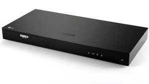
Comparatif des 10 meilleurs Lecteurs Blue Ray
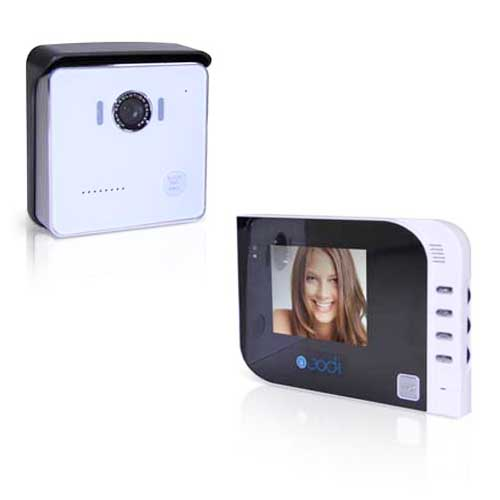
Comparatif des 10 meilleurs Portiers Video de 2023
Comparatif des 10 meilleurs Casques Audio Sans Fil Pour TV
Comparatif des 10 meilleurs Smartphones 5 Pouces de 2023
Comparatif des 10 meilleurs barebone de 2023
Comparatif des 10 meilleurs Appareils Photo Plongée
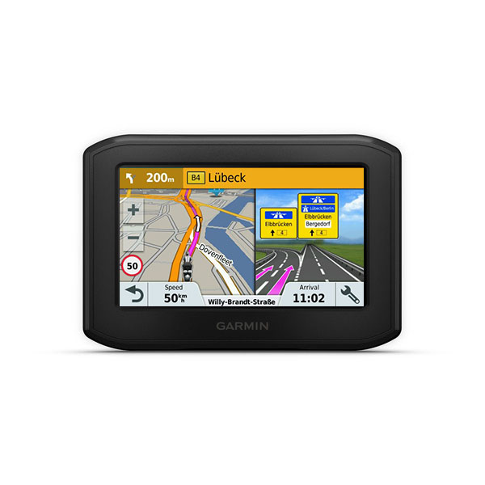
Comparatif des 10 meilleurs GPS Moto
Dell Optiplex 380 – Test et avis
Canon Pixma IP7250 – Test et avis
Black Et Decker 1630 – Test et avis
Comparatif des 10 meilleurs Micros Chaine
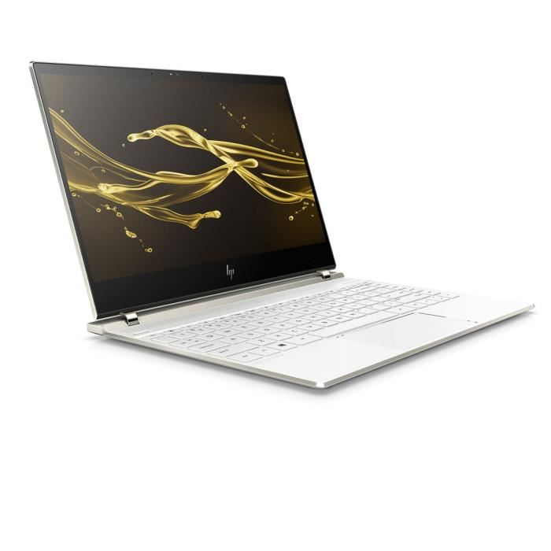
Comparatif des 10 meilleurs ultra portables de 2023
HP Envy 7640 – Test et avis
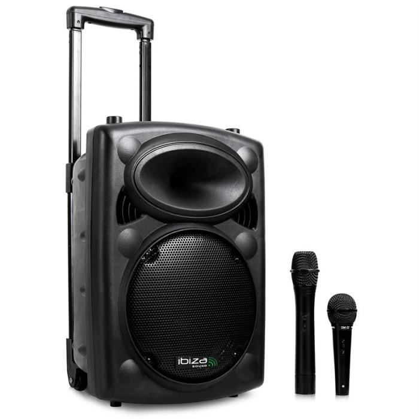
Comparatif des 10 meilleures Sonos Portables